Process · Design system01
Un process d'intégration en 5 étapes
Intégrer les librairies des projets au design system commun : prioriser, inventorier, documenter, homogénéiser, déployer.
Les noms des outils internes ont été anonymisés.

Intégrer les librairies des projets au design system commun : prioriser, inventorier, documenter, homogénéiser, déployer.
Les noms des outils internes ont été anonymisés.
Les documents de conception sont centralisés dans un même espace, projet par projet. Un équivalent a été mis en place dans SharePoint pour partager les documents.
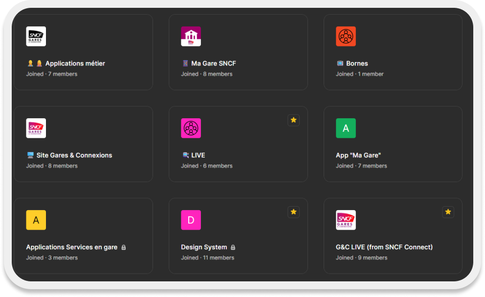
Cette organisation allège aussi la gestion des droits d'accès.
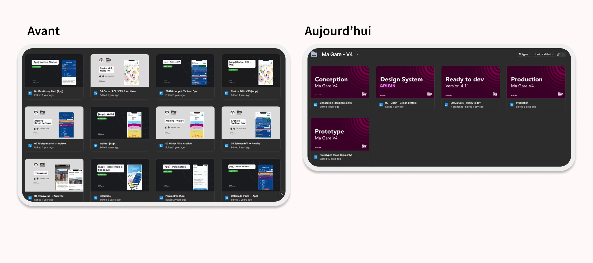
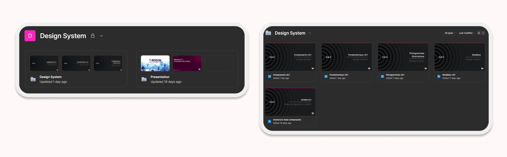
Le sommaire de la librairie Origin, conçue pour l'application Ma Gare sur Android et iOS : huit parties, des fondamentaux aux modèles de pages, en passant par les atomes, les molécules et une grille de test avant publication.
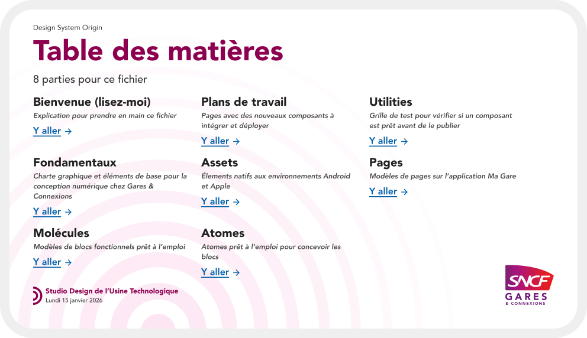
Couleurs et design tokens, typographie, espacements, arrondis et grilles, ombres et focus, icônes, pictogrammes, motion… ainsi qu'un kit d'accessibilité RGAA/RAAM et une méthodologie de design pour documenter les rendus.
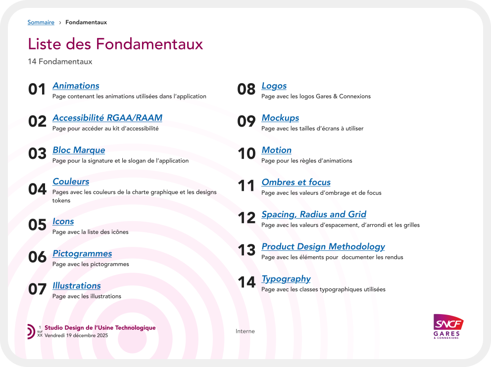
Un composant de type page, décliné en variantes (départs, arrivées, modes de transport) et relié au fichier Productions pour le flow et les spécifications.
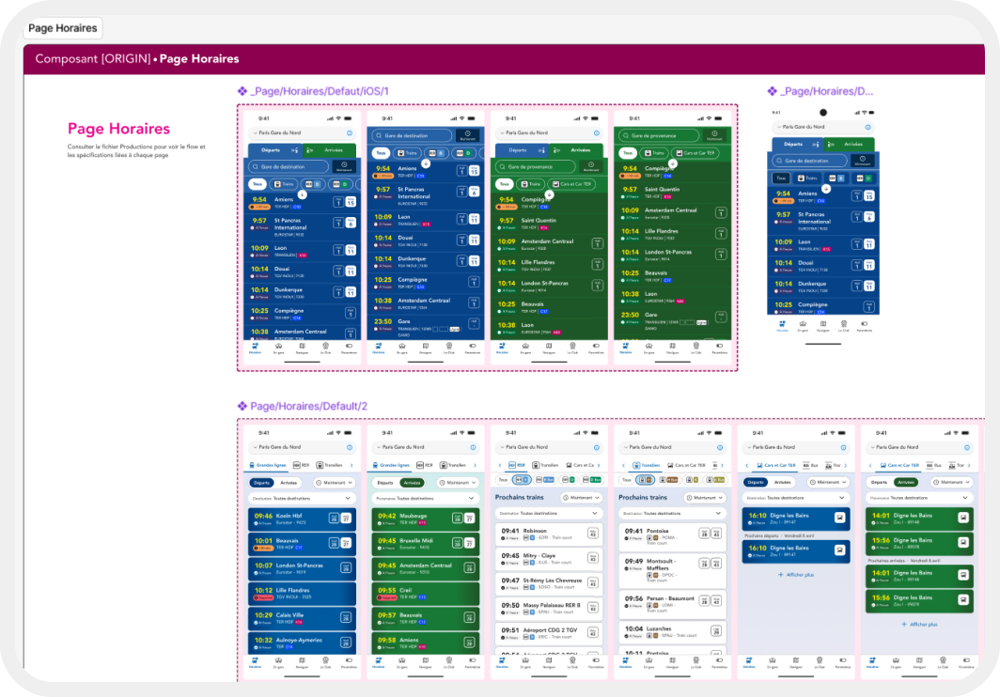
Un bloc fonctionnel documenté avec ses états (chargement, à l'heure, retardé, supprimé), ses variantes par mode et la liste des composants qui le constituent.
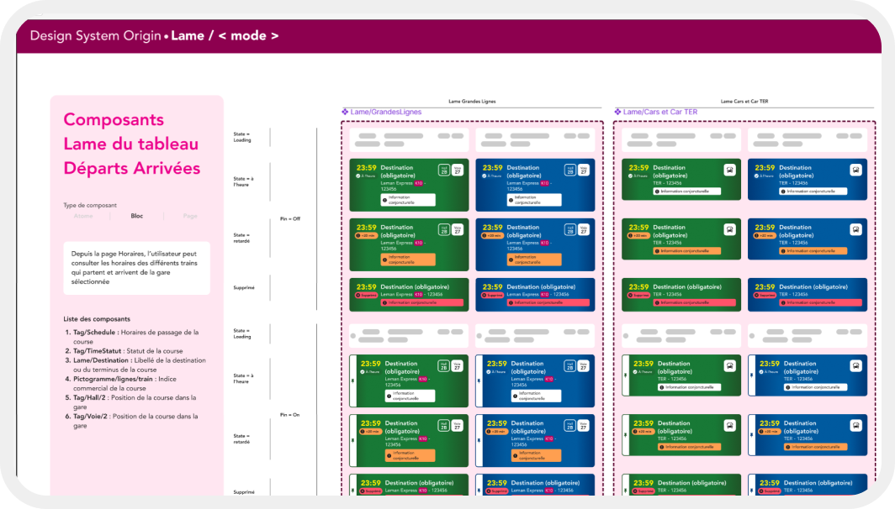
La structure de ce fichier a été construite en échangeant avec les designers sur leur fichier idéal.
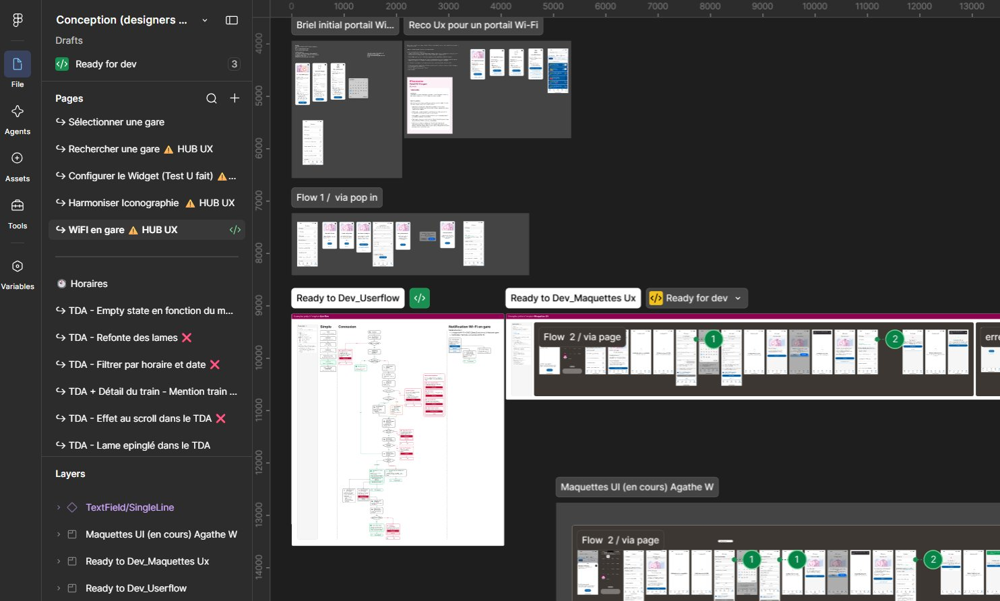
La structure de ce fichier a été construite en échangeant avec les développeurs sur leur fichier idéal.
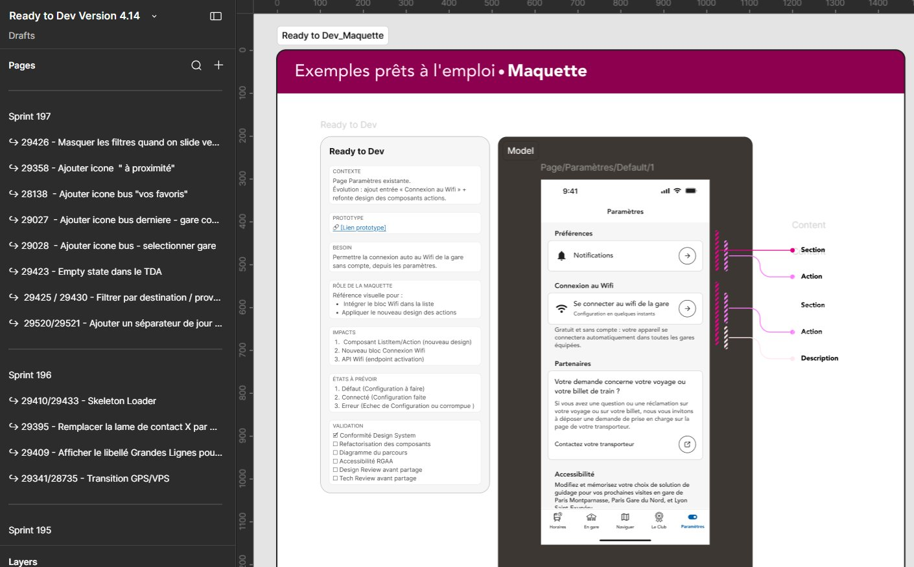
La structure de ce fichier a été construite en échangeant avec les product owners et les testeurs sur leur fichier idéal.
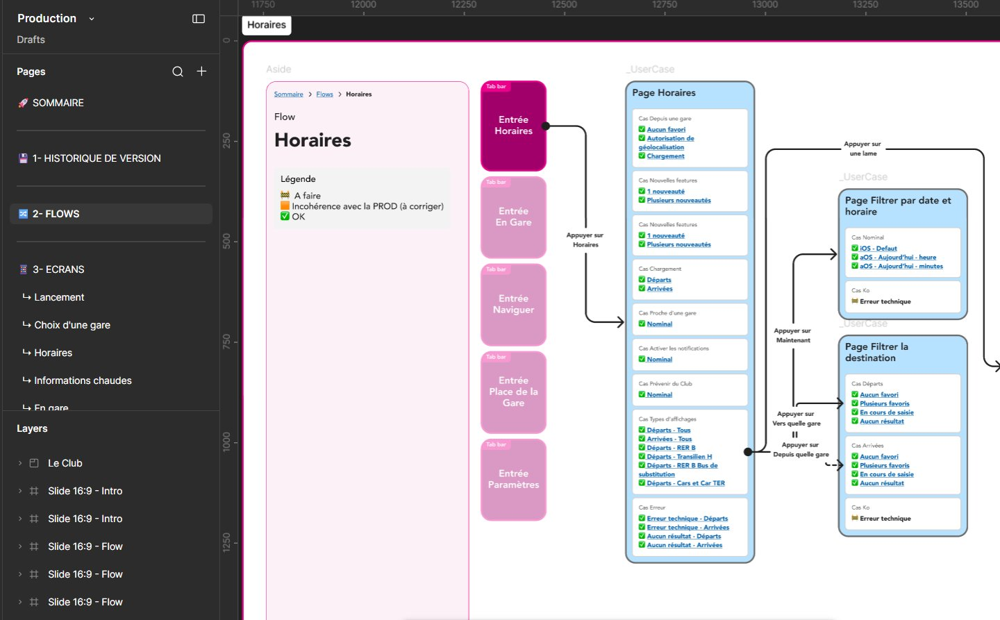
Un fichier de pilotage recense l'ensemble des composants du design system et leur statut.
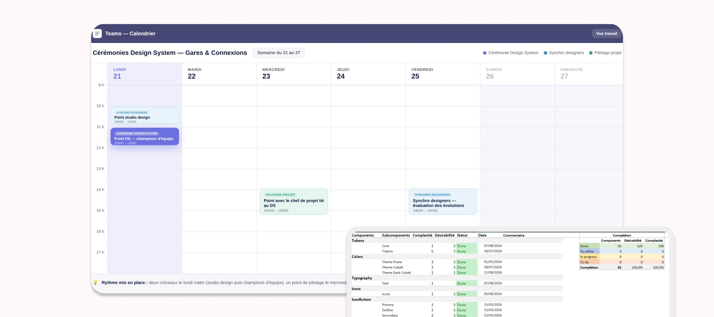
Des canaux dédiés permettent aux équipes de développement et aux designers d'échanger directement : un canal général, un pour le framework DS, puis un par produit (Live IHM, Live Socle, Live MaasTransit, Live Multimodal, MaGare).
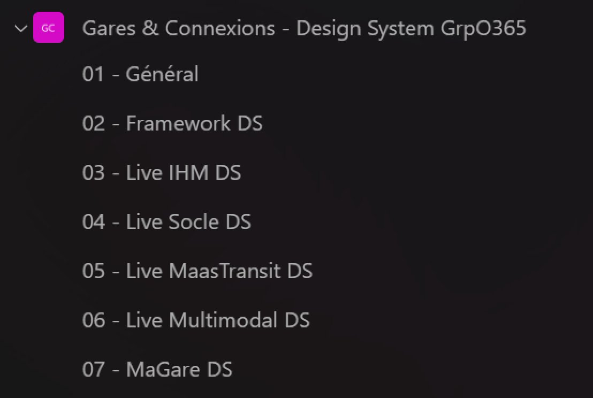